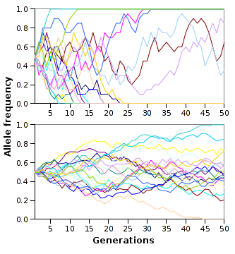
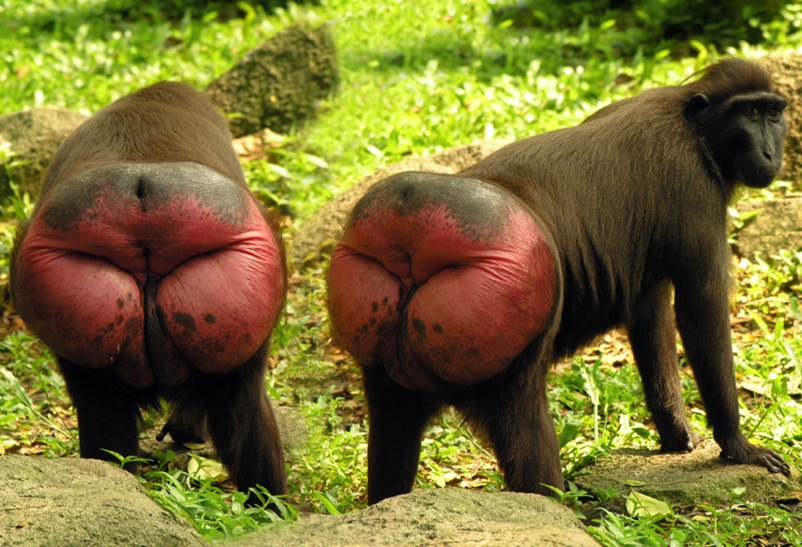
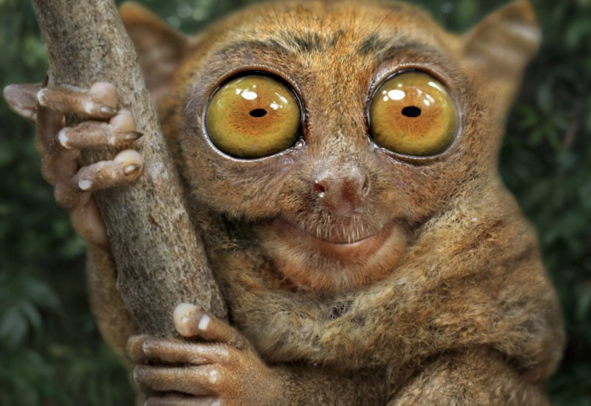

Wprowadzenie do psychologii społecznej - 09 - Wprowadzenie do teorii ewolucji
Krzysztof Basiński
Wprowadzenie do teorii ewolucji
Ważne dzieła w historii ewolucjonizmu
- On the Origin of Species by Means of Natural Selection, or the Preservation of Favoured Races in the Struggle for Life (Darwin, 1859)
- The Selfish Gene (Dawkins, 1976)
Zagadka - jak można połączyć te rzeczy (Geher)?
- Pingwiny cesarskie badają czy w okolicznych wodach nie ma drapieżników poprzez zepchnięcie innych pingwinów do wody
- Ziarna klonu niesione są przez wiatr na długie dystanse za pomocą “opakowania” przypominającego wirnik helikoptera
- Najczęściej dzieciobójstwa dopuszczają się macochy/ojczymi
Zagadka - jak można połączyć te rzeczy (Geher)?
- Lwy-samce, po przejęciu haremu innego samca, zabijają wszystkie dzieci spłodzone przez innego samca
- Ekspresja uśmiechu jest interpretowana podobnie przez wszystkich ludzi na całym świecie, niezależnie od kultury
Co to jest ewolucja?
- Ewolucja to proces zmiany czegoś w czasie
- Nie tylko organizmy żywe - podstawy teorii ewolucji można zastosować do wielu rzeczy
Selekcja naturalna
- Cechy organizmu, które zwiększają jego szanse na sukces reprodukcyjny (RS), są zachowane w trakcie ewolucji
- Cechy, które nie zwiększają szans na RS, nie są zachowane
Selekcja naturalna
- Cechy zwiększające szanse na reprodukcję są najczęściej dobrze dopasowane do środowiska (fitness)
- Teoria ewolucji zakłada, że środowisko wywiera zasadniczy wpływ na kształtowanie organizmów
Samolubne geny (Dawkins)
- To co podlega selekcji i replikacji, to tak na prawdę geny, a nie organizmy
- Geny, które będą się skutecznie replikować muszą:
- replikować się wielokrotnie w ciągu życia (fecundity)
- prowadzić do długiego życia, które zwiększa możliwości replikacji (longevity)
- mieć wysoką jakość - replikować się dokładnie, aby geny następnych pokoleń miały niewiele błędów (fidelity)
- Teza o samolubnych genach jest dość kontrowersyjna - być może lepiej analizować nie pojedyncze geny a całe fenotypy - http://pl.wikipedia.org/wiki/Samolubny_gen
Jak to się ma do gatunków?
- Ewolucja nie dotyczy gatunków!
- Adaptacje nie wykształciły się po to, aby umożliwić przetrwanie gatunku!
- Podział na gatunki jest produktem ewolucji
Adaptacja i fitness
- Adaptacje to te cechy organizmu, które ułatwiają mu przetrwanie i reprodukcję w danym środowisku
- Adaptacje zwiększają szanse na RS
- Dopasowanie (fitness) dotyczy dopasowania do środowiska
- Cechy adaptacyjne zwiększają dopasowanie
Selekcja seksualna
- Dlaczego pawie mają ogony?
- Czy pawi ogon zwiększa szanse na przetrwanie?
- Czy pawi ogon zwiększa szanse na reprodukcję?
- (dlaczego tak jest? jeśli paw może robić wszystko to co inne pawie oraz ma piękny ogon, pewnie ma też inne silne geny)
Dwa warianty selekcji seksualnej
- Selekcja interseksualna - cechy są atrakcyjne dla płci przeciwnej (pawi ogon, szerokie ramiona, kobiece kształty)
- Selekcja intraseksualna - cechy zwiększające przewagę w walce o płeć przeciwną (rogi u jeleni i łosi, wojny u ludzi)
Mechanizmy ewolucji
- Selekcja naturalna
- Selekcja seksualna
- Dryf genetyczny - wydarzenia “losowe” w historii genotypów
- Spandrels - efekty uboczne, pojawiające się w trakcie ewolucji, które nie mają roli adaptacyjnej
- Np. umiejętność czytania nie jest adaptacją ewolucyjną, została wykształcona jako skutek uboczny wykształcenia się języka, muzyka jako “słuchowy sernik” (auditory cheesecake) (Pinker, 1999)
Symulacja dryfu genetycznego

Selekcja wielopoziomowa (Wilson, 2007)
- Mechanizmy ewolucyjne działają na wielu poziomach jednocześnie: na poziomie genu, genotypu, jednostki, grupy społecznej
- Jakaś cecha może być adaptacyjna na jednym poziomie, a nieadaptacyjna na innych!
- Np. prospołeczność jest nieadaptacyjna na poziomie jednostki, ale na poziomie grupy społecznej już tak
Ewolucja kultury, memy (Dawkins, 1989)
- Tak jak geny kodują cechy fizyczne organizmu, memy kodują cechy kulturowe
- Nauka o memach - memetyka
- Memetyka to zastosowanie teorii ewolucji do rozwoju kultury ludzkiej
Środowisko adaptacji ewolucyjnej (Bowlby, 1969)
- Ang. environment of evolutionary adaptedness (EEA)
- Takie środowisko, dla którego wykształciły się adaptacje na drodze ewolucji
- Jeżeli środowisko szybko się zmienia, ewolucja nie nadąża
Jakie jest EEA ludzi?
- Zbieracko-łowieckie bandy, złożone z ok. 150 osobników (pamiętacie liczbę Dunbara?), w których ludzie byli dość mocno spokrewnieni ze sobą
- “Our modern skulls house a Stone Age mind” - Cosmides & Tooby, 1997
Tylko kilka przykładów rozdźwięku pomiędzy EEA a współczesnym środowiskiem
- Preferowanie jedzenia tłustego i słodkiego (głód był normą na sawannie afrykańskiej)
- Kultury kolektywistyczne
- Słaba odporność na przewlekły stres
Założenia psychologii ewolucyjnej
- Organizmy są produktami selekcji naturalnej i innych procesów ewolucyjnych
- Specyficzne cechy organizmów są więc również produktami ewolucji
- Ludzki układ nerwowy jest ważną fizyczną cechą naszego gatunku (mózg jest najbardziej skomplikowanym ludzkim organem)
- Całość zachowania jest wynikiem pracy układu nerwowego
- Ludzkie zachowanie jest więc rezultatem ewolucji
Zachowanie z perspektywy ewolucji
- Zachowanie jest adaptacją, która u organizmów z układem nerwowym pozwala reagować na bodźce ze środowiska
- Np. trawa nie ma układu nerwowego, więc nie może uciec przed krową…
- “Evolutionary psychology is the radical notion that human behavior is part of the natural world”
Ewolucja jest kiepskim projektantem

Ewolucja jest kiepskim projektantem

Ewolucja jest kiepskim projektantem
- “Ostatnim idealnie zaprojektowanym organizmem był rekin…” - Noam Chomsky
- Mechanizmy ewolucyjne nie dążą do tego, by organizmy były idealnie zaprojektowane!
- Większość adaptacji wiąże się też z “negatywnymi” skutkami ubocznymi (np. choroby psychiczne)
Pojęcia
- Selekcja naturalna (natural selection)
- Selekcja seksualna (sexual selection)
- Sukces reprodukcyjny (RS - reproductive success)
- Dziedziczność (heritability)
- Mutacja (mutation)
- Adaptacja (adaptation)
- Fitness